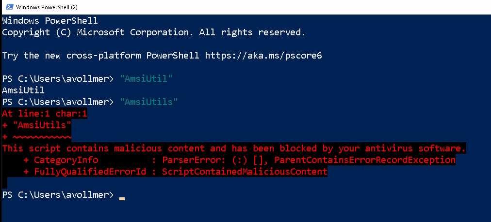

Antivirus Evasion Techniques
Let’s discuss some common antivirus detection techniques and how PowerHub attempts to bypass them.
Network Monitoring
Technique
Antivirus detection does not necessarily have to happen on the endpoint. It’s common to check files transferred from the network for malicious code before it even reaches the endpoint. Usually, this happens in web proxies.
Our Bypass
PowerHub support HTTPS. Since some antivirus products perform TLS inspection, almost all data is encrypted on an additional layer using either RC4 or AES. Yes, RC4 is insecure, but practical attacks are still sufficiently difficult for antivirus products.
File System Monitoring
Technique
Whenever a file is written to disk, antivirus checks it against known malware.
Our Bypass
Easy: Don’t write anything to disk. PowerShell makes it possible to execute code entirely in-memory.
AMSI
Technique
Whenever PowerShell executes a script, it is first passed to the antivirus
product which checks it for malicious code. This check is often quite
primitive, such that it was at some point sufficient to replace
Invoke-Mimikatz with Invoke-Mimidogz. The mere presence of some IT
security researcher’s name is sometimes enough to trigger an antivirus.
Our Bypass
PowerHub doesn’t use any novel AMSI bypass. There are long lists of AMSI bypasses, because PowerShell is so powerful, it can modify its own behavior.
The challenge is to get one of the bypasses by AMSI itself, because the bypasses are obviously immediately detected if executed naively. Some bypasses are quite short and the only suspicious thing about them are some strings. For example, this is one of the first bypasses by Matt Graeber and it fits in a Tweet:
[Ref].Assembly.GetType('System.Management.Automation.AmsiUtils').GetField('amsiInitFailed','NonPublic,Static').SetValue($null,$true)
In fact, Windows Defender will consider this malicious simply because it
contains the string AmsiUtils. Try it out: Open a PowerShell and type
"AmsiUtil". Then type "AmsiUtils":

Imagine we replaced the strings:
[Ref].Assembly.GetType($string1).GetField($string2,$string3).SetValue($Null,$True)
Surely this line cannot be considered malicious, or else it would probably break legitimate scripts. So if we manage to obfuscate the original strings, we should be good. There are infinite ways to obfuscate a string. You can split them up, rearrange them using format strings, put them together from bytes, work with replacement rules, and much, much more. Daniel Bohannon has worked out a whole bunch of obfuscation methods, not only for strings, but also for other PowerShell “tokens”.
In PowerHub, we take an even more systematic approach: Strings are “obfuscated” using the RC4 encryption algorithm. It’s simple enough so it can be implemented in a couple of lines of pure PowerShell, and while technically broken, still strong enough to throw off automated detection techniques, especially if they are supposed to work in the background without affecting the user’s workflow.
Entropy Analysis
Technique
Overly obfuscated code looks weird. You’d be able to spot it a mile away. Machines can be made to recognize it as well, by means of frequency analysis of individual letters or, more generally, entropy analysis. Daniel Bohannon, who worked on obfuscating code, also suggested ways to defeat code obfuscation together with Lee Holems.
Our Bypass
We (optionally) wrap our code in legit PowerShell code. Downloaded from one of Microsoft’s GitHub repositories, PowerHub has hundreds of modules that do nothing and which will be randomly chosen to pad suspicious code. Plus, instead of using randomly generated variable names, PowerHub can use variable names inspired by real code to make it look more natural.
We will still have large encoded binary blobs in our code, but we must assume that it won’t be feasible for antivirus products to block all scripts with blobs in them. There is no way around this – I think.
API Hooking
Technique
Hooking certain routines, such as the AES decryption routine, actually makes
sense. If a process decrypts data that contains naughty strings like
Mimikatz, it is killed immediately by some antivirus products.
Our Bypass
PowerHub has the option to stick to RC4, which doesn’t use any APIs. It’s noticeably slower but should be stealthier at the same time.
Static Analysis
Technique
Malicious code such as the cradle itself could be detected simply by
blocking code which contains both DownloadString and Invoke-Expression.
Our Bypass
PowerHub has two approaches. One is the “incremental delivery”, by which pieces of the stager are loaded incrementally. To avoid the cradle itself being detected, PowerHub knows the option “split cradle”. You will then have to execute two commands in the same PowerShell session, which may not always be possible.
Behavior Analysis
Technique
Some actions that malware typically performs are inherently suspicious: Process hollowing, accessing honey tokens, getting a handle on the LSASS process, etc.
These actions are detectable in principle, and that’s one of the techniques employed by modern antivirus products. The only issue is that not all actions are inherently suspicious but still considered malware. Whatever BloodHound does, for example.
Our Bypass
Yeah I got nothing. Dear friends from Kaspersky, Palo Alto and Windows Defender: That’s where I’d focus. Good luck.
Counter measures
So what you can do as a defender about software like PowerHub?
It’s simple:
Enable constrained language mode
Make sure PowerShell version 2 is disabled
Block all executables in user-writable directories as well as these LOLBINs
Fine, also allow signed binaries matching a fixed list of product names like “Microsoft Teams” even if they are located in writable directories
(Hey, no one said it would be easy, I only said it was simple …)
And don’t get too hung up on this tool. These techniques are not new and not unique to PowerHub. Antivirus products can always be tricked. They are insufficient and you should apply application control instead, for example using AppLocker or Application Guard.